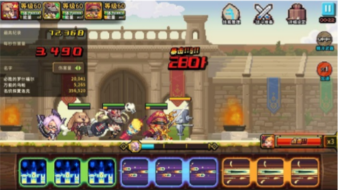

Crusaders Quest is an interesting mobile game. A mysterious witch has brought great darkness to the game world, and the only hope for your kingdom is to save the Goddesses so that they can unleash their power to fight against the witch.

In order to save the game world, you need to choose three heroes to fight for victory and use their skills wisely. Nine skill blocks of three different types (three blocks per type) will be presented at the bottom of the screen. If $k(k \ge 1)$ consecutive blocks are of the same type, you can tap on them and eliminate them, thus triggering the powerful skill they represent. After the elimination, the blocks to their left will be connected with the blocks to their right. Moreover, if $k=3$ consecutive blocks of the same type are eliminated, the powerful skill they unleash will be upgraded to a super skill, which is the most powerful skill of all.
DreamGrid is a newbie in this game, and he wants to trigger the super skill as many times as he can. Given nine skill blocks satisfying the description above, please help DreamGrid calculate the maximum number of times he can trigger the super skill.
 Comet OJ
Comet OJ